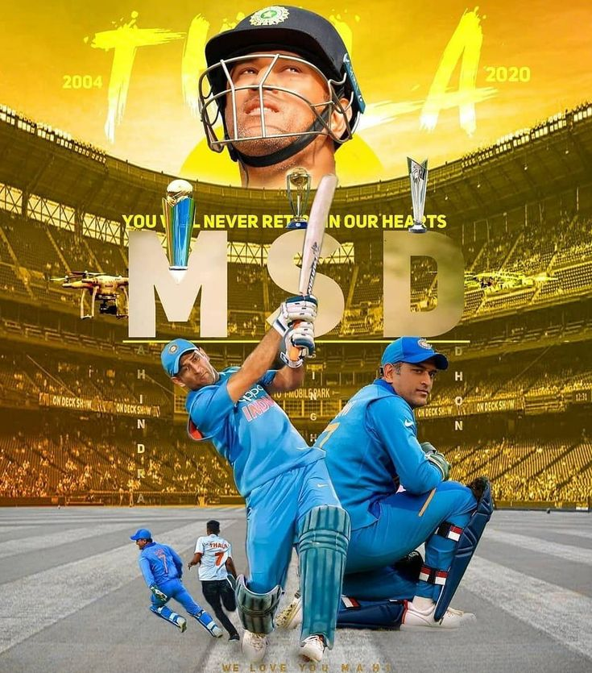

Msdhoni 🏏
A film based on Dhoni's life from his childhood to the 2011 world cup win,
titled M.S. Dhoni: The Untold Story, with Sushant Singh Rajput in the lead
role was released on 29 September 2016
Dhoni married Sakshi Singh Rawat on 4 July 2010 in Dehradun.[179][180] Dhoni and his
wife have a daughter who was born on 6 February 2015.[181][182] He lives in his
farmhouse outside Ranchi.[183] Dhoni is an automotive enthusiast and owns a number
of bikes and cars in his collection.[184]

Dhoni Photo Gallary
Batting | wicket keeper | captain
Dhoni holds an honorary rank of Lieutenant Colonel in the Parachute Regiment of the Indian Territorial Army (106 Para TA battalion).[141] The honorary rank was presented to him
by the Indian Army in 2011 for his service to the nation as a cricketer

Dhoni Photo Gallary
Best Captain | Always Thala | wicket Keeper
After completing five parachute training jumps from Indian Army aircraft in the
Agra training camp, he became a qualified paratrooper in 2015.In August 2019,
he completed a two-week stint with the Territorial Army in Jammu and Kashmir.
While spending a day with the parachute regiment in Ranchi, Dhoni said, I wanted
to become a soldier not a cricketer, "Since childhood I wanted to join the Army.
Seeing the soldiers, I thought that one day I'll be the same".
Contact
+91 12345678 | csk@gmail.com
2, super kings street , chennai-28